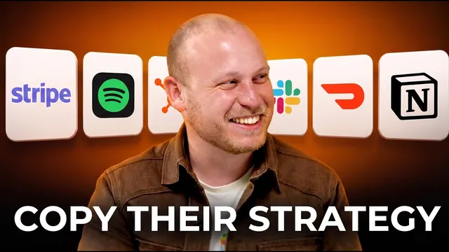

앤트로픽이 공개한 최상위 AI 기업들의 작업 방식

원본 영상 보기 →
- AI 도입은 위에서 아래로 흘러요
- AI의 성과는 "접근권 + 데이터 + 맥락"의 곱셈입니다
- 가장 큰 ROI는 "원래 안 하던 일"에서 나옵니다
한 줄 요약
Anthropic이 공개한 고객 사례집을 분석해 봤더니, AI 도입에 성공한 Notion·Zapier·DoorDash 같은 "AI 퍼스트" 기업들은 전부 같은 8가지 원칙을 따르고 있었어요. 이 영상은 그 원칙들을 사업주, AI 에이전시, 사내 AI 챔피언 세 관점에서 어떻게 적용할지 정리합니다.
전체 내용 정리
매니저가 먼저 써야 조직 전체로 퍼져요
사례집에서 가장 자주 반복된 포인트입니다. "매니저가 먼저 AI를 쓰는 팀일수록 팀 전체 채택률이 높다."
IG그룹과 DoorDash는 매니저가 직접 Claude를 쓰는 팀이, 개인 챔피언 한 명에게 의존하는 팀보다 채택률이 훨씬 높았다고 밝혔어요.
많은 매니저와 경영진이 저지르는 흔한 실수가 있습니다. "AI는 기술적이라 잘 모른다"는 이유로 사내 담당자를 지정하거나 외부 인력을 고용해 AI를 "대신 맡기는" 것이요.
그런데 실제로는 AI 도입이 위에서 아래로 흐르지, 아래에서 위로 새어 올라가지 않습니다. 매니저 자신이 먼저 써야 팀에 퍼져요.
성과가 좋은 회사는 경영진이 최소한 AI 모델의 기본과 할 수 있는 일을 알고, 팀에 "이걸로 이런 걸 해보라"고 방향을 제시할 수 있는 곳이었습니다. 효과적인 방법은 하루 중 한 시간을 떼어 AI로 일상 업무를 자동화해 보는 것이고, 2~3주 정도 지나면 AI가 업무의 기본 도구가 돼요.
AI 챔피언을 지정하지 말고 자연스럽게 나오게 하세요
두 번째 원칙은 누가 AI를 잘 쓸지 미리 예측할 수 없다는 겁니다.
DoorDash는 특정 인물을 챔피언으로 지정하는 대신 전 직원에게 AI 툴 접근권을 줬어요. 그리고 자발적으로 업무 시간에 AI를 많이 쓰며 결과물을 잘 만들어내는 사람을 찾아내 그 사람을 부서나 조직의 AI 챔피언으로 세웁니다.
이를 위해 일부 기업은 매주 "AI 스탠드업" 미팅을 열어 팀원 전원이 그 주에 AI로 처리한 사례를 한 가지씩 공유하게 해요. Claude나 OpenAI 팀 플랜의 사용량 데이터로 파워 유저를 추적하기도 하고요.
조직 내 전문직 개인 입장에서는 이 지점이 기회입니다. 모든 일에 AI를 쓰고 배운 것과 결과물을 계속 공유하면 회사에서 대체 불가능한 존재가 되고, 나아가 자신의 AI 에이전시나 사업을 시작할 기반도 마련돼요.
이미 쓰는 도구 안에 AI를 심으세요
Claude Code나 Cowork 같은 별도 AI 툴은 접근 권한을 줘도 직원들이 실제로 잘 쓰지 않는 경우가 많습니다.
재밌는 사례가 있어요. 한 회사의 COO가 Claude에게 밤새 작업을 돌리고 결과를 사내 공개 Slack 채널에 자동으로 올리게 했더니, 가장 많이 달린 댓글이 "나도 Cowork 접근권 달라"였습니다. 이후 재무팀 전체가 업무의 60% 이상을 자동화했어요.
Claude Tag처럼 Slack이나 Notion 같은 이미 쓰던 인터페이스 안에 AI 능력을 그대로 심는 방식은, 팀 전체가 익숙한 환경에서 AI의 가치를 보고 파워 유저의 사용법을 자연스럽게 옆에서 보며 배우게 만듭니다.
여기에 더해 Workato는 Claude를 Salesforce·Gong 같은 사내 소프트웨어에 MCP로 연결하자 직원 채택률이 700% 이상 뛰었다고 밝혔어요. AI가 실제 데이터에 접근하지 못하면 결국 사람이 계속 복사·붙여넣기를 해야 하는 "챗봇" 수준에 머물기 때문입니다.
자격 증명을 전 직원과 공유하지 않고도 이런 연결을 안전하게 세팅하려면 Composio 같은 메타 커넥터를 쓰면 돼요. 관리자가 회사의 모든 소프트웨어를 한 번 연결해 두면 팀원은 커넥터 하나로 권한 설정이 적용된 모든 소프트웨어에 접근할 수 있고, 비즈니스 플랜에서는 부서·직원별 권한까지 나눌 수 있습니다.
회사 전체가 공유하는 '세컨드 브레인'을 만드세요
Sierra, Zapier, HubSpot은 모두 고객 인사이트, 의사결정, 데이터 분석, 브랜드 가이드라인, 톤앤매너 등이 한곳에 모인 컨텍스트 저장소 — 일종의 "세컨드 브레인"을 운영합니다.
이게 왜 중요하냐면, AI 도입을 가로막는 가장 큰 장애물 중 하나가 같은 맥락을 매번 복사·붙여넣기 해야 하는 것이고, 결과물 품질을 떨어뜨리는 가장 큰 원인이 맥락 부족이거든요. 이런 저장소 하나로 두 문제가 동시에 해결됩니다.
실제로는 전략 문서, ICP 문서, 브랜드 가이드라인, 데이터 분석 등 텍스트 파일을 모아 둔 폴더 하나일 뿐이에요. 팀원은 자기 AI 툴에서 폴더 선택 기능으로 이 컨텍스트를 불러와 쓰기만 하면 됩니다. 이렇게 하면 시각 결과물은 항상 브랜드 스타일을 따르고, 카피는 항상 브랜드 보이스에 맞게 나와요.
이 세컨드 브레인은 팀 내 한 사람이 몇 시간만 투자하면 처음 구축할 수 있고, 이후 팀 전체에 쉽게 배포할 수 있습니다.
아무도 손대지 못했던 일까지 자동화 대상으로 삼으세요
일상적인 이메일 정리나 미팅 준비 같은 업무를 자동화하는 것도 좋은 시작이에요. 그런데 사례집에서 가장 큰 성과는 "원래는 아예 하지 않던 일"에 AI를 썼을 때 나왔습니다.
Whis는 2년째 백로그에 방치돼 있던 프로젝트를 Claude가 20시간 만에 해냈어요. 숙련된 엔지니어가 2~3개월 걸릴 일이라 어떤 프로덕트 매니저도 우선순위에 못 올렸던 작업이었습니다.
Duvo는 한 리테일 고객사를 위해 원래 "잘해야 분기에 한 번" 하던 모니터링 워크플로를 자동화했더니 첫 주에만 145만 유로의 비용 절감이 발생했고요.
저자의 에이전시도 CRM에서 방치된 리드에 다시 연락하거나, 모든 상담 통화 기록을 Claude에 넣어 고객 인텔리전스 리포트를 뽑는 등 "원래는 절대 하지 않았을 일"에 AI를 쓰고 있어요. 기존 업무를 효율화하는 것뿐 아니라 아직 아무도 하지 않고 있는 일을 찾아 제안하는 것이 훨씬 큰 가치를 만듭니다.
세 번 이상 반복하는 일은 스킬로, 그 스킬은 팀의 자산으로
AI 퍼스트 기업들의 또 다른 공통점은 스킬을 조직 전체가 활발히 만든다는 거예요.
많은 회사에서는 여전히 자동화나 스킬 제작을 IT부서나 외부 업체에 맡기지만, 실제로 가장 좋은 스킬은 그 업무를 담당하는 사람이 직접 만든 것입니다. Claude의 "레코드 어 스킬" 기능을 쓰면 업무를 하면서 설명만 해도 자동으로 스킬이 만들어지니 비개발자도 쉽게 만들 수 있어요.
사례가 구체적입니다. 30인 규모 회사 Blank Metal에서는 비개발자인 CRO가 리드를 채점하고 HubSpot에 딜을 생성하고 Slack에 공유하는 스킬을 한 시간 만에 직접 만들어 영업팀 전체가 하루에 몇 시간을 절약하게 됐어요. 1000명 규모 에이전시 Brain Labs는 전 직원에게 스킬을 제안·제작할 수 있는 간단한 방법을 열어 줘 4주 만에 약 400개의 스킬 라이브러리를 쌓았고요.
HubSpot은 이 원칙을 한 문장으로 설명합니다. "내가 만든 워크플로가 하루 30분을 아꼈다면, 우리 팀 전체에게도 필요한 것이다."
스킬이 한 번 작동하면 더 이상 한 사람의 노트북에만 머물러선 안 되고, 팀 누구나(또는 다른 AI 에이전트도) 쓸 수 있어야 해요. Claude 팀 플랜에는 스킬을 만든 사람이 공유 대상을 지정하면 이후 업데이트가 팀원 전체 계정에 자동 동기화되는 스킬 공유 기능이 새로 생겼으며, 원작자만 수정 권한을 갖는 방식으로 "스킬 오너"가 명확히 유지됩니다.
핵심 인사이트
- AI 도입은 위에서 아래로 흘러요: 팀원에게 AI를 맡기기 전에 매니저와 경영진 자신이 먼저 매일 써야 조직 전체 채택률이 올라갑니다. 기술을 몰라서 위임하는 방식은 반대 방향으로 작동해요.
- AI의 성과는 "접근권 + 데이터 + 맥락"의 곱셈입니다: 소프트웨어 연결로 실제 데이터에 접근하고, 세컨드 브레인으로 회사 맥락을 갖췄을 때 AI는 챗봇 수준을 넘어서요. 하나만 있으면 절반의 효과만 납니다.
- 가장 큰 ROI는 "원래 안 하던 일"에서 나옵니다: 기존 업무를 조금 빠르게 만드는 것보다, 인력과 시간이 없어 손도 못 대던 백로그나 저빈도 업무를 AI로 처음 해내는 쪽이 압도적으로 큰 성과를 만들어요.
오늘 당장 해볼 것
- 오늘부터 하루 1시간을 떼어 반복 업무 하나를 직접 Claude로 자동화해 보세요. 이메일 정리, 미팅 준비, 상담 기록 정리 같은 거요. 남에게 맡기지 말고 본인이 먼저 2~3주 써 보시는 게 핵심입니다.
- 브랜드 가이드, 자주 쓰는 문구, 고객 정보, 자주 참고하는 문서를 텍스트 파일로 모은 폴더를 하나 만들어 "세컨드 브레인"으로 삼으세요. AI 작업 시 그 폴더를 항상 함께 불러오면 됩니다.
- 최근 2년 이상 손 못 댄 채 방치된 업무를 하나 골라 이번 주 안에 자동화를 시도해 보세요. 방치된 리드 재접촉이나, 정기적이지 않던 모니터링·리포트 작업 같은 거요.